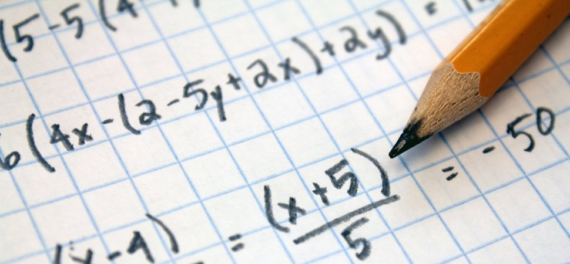
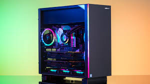
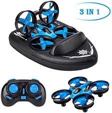
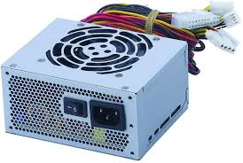
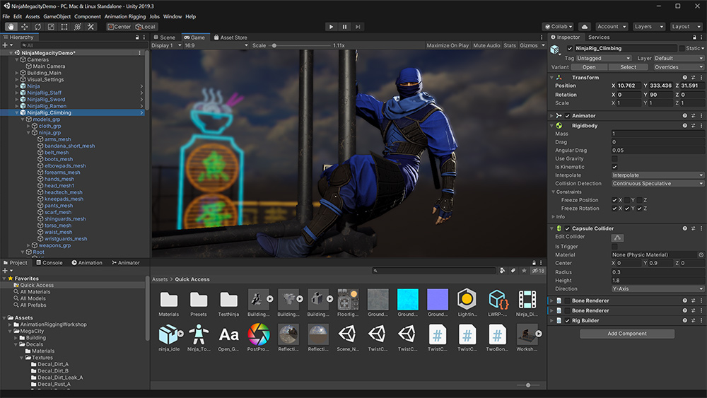

-
Home full of memes
-
Facts about James
- I am 11 years old in 6th grade.
- I have 5 family members in my family.
- I like to eat pasta with chicken and pizza.
- I like to run with my brother and my dad.
- I love to do math and read books with my classmates.
Stuff that I like
- pasta with chicken
- math

- pizza
The things I did about stem in morrison mentors
- I did was that we had to take apart a computer to see the hardware parts

- The next thing we did is that we used drones to test the in flying and on the ground.

- Then we did was that we did a project on a type of hardware and I chose the powersupplyunit

- Now we are doing websites about ourselves
- Before that there was this app called unity where we would able to build anythng

The projects about the hardware
mm Mm2
Mm2
Thing that i learned.febuary 24,2020
- I learned that you can weight with a scale called the triple beam balance and then we got to weight objects and see if they would float or not.
On March/9/2020
- March/9/2020.Today we got to clean our tech gear with wipes and cleaners.Also did you know that the wipes that we used to clean the computers killed almost 99.9% of gems.